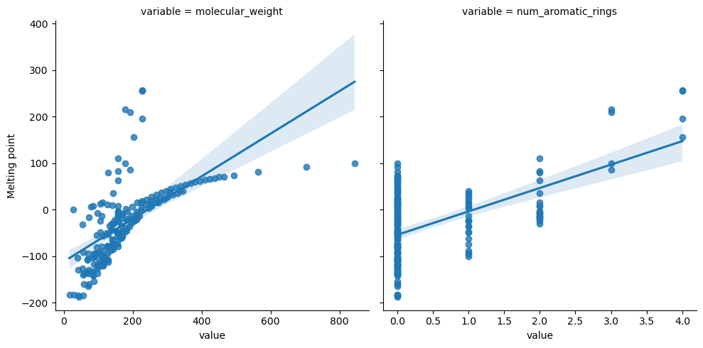

Generating and analyzing a dataset using RDKit
Contents
Generating and analyzing a dataset using RDKit#
This is an exploratory notebook using rdkit and other libraries to examine melting points of hydrocarbons.
import pandas as pd
import seaborn as sns
import matplotlib.pyplot as plt
from rdkit import Chem
from rdkit.Chem import Descriptors, PandasTools
df = pd.read_csv("data/hydrocarbons.csv")
df.head()
| Class of hydrocarbon | IUPAC name | Melting point | Boiling point | Density@20å¡C* | Flash point | Autoignition temp | pubchem_id | smiles | |
|---|---|---|---|---|---|---|---|---|---|
| 0 | Trimetylalkane | 2,2,4-Trimethylpentane | -107.0 | 99.0 | 0.69 | NaN | 396 | 10907 | CC(C)CC(C)(C)C |
| 1 | Triaromatics | Phenanthrene | 99.0 | 338.0 | 1.18 | 171 | >450 | 995 | C1=CC=C2C(=C1)C=CC3=CC=CC=C32 |
| 2 | Triaromatics | Anthracene | 216.0 | 341.0 | 1.2825 | NaN | NaN | 8418 | C1=CC=C2C=C3C=CC=CC3=CC2=C1 |
| 3 | Triaromatics | 1-methylanthracene | 86.0 | 342.0 | 1.04799 | NaN | NaN | 11884 | CC1=CC=CC2=CC3=CC=CC=C3C=C12 |
| 4 | Triaromatics | 2-methylanthracene | 209.0 | 340.0 | 1.8 | NaN | NaN | 11936 | CC1=CC2=CC3=CC=CC=C3C=C2C=C1 |
# Use pandas tools to
PandasTools.AddMoleculeColumnToFrame(df,'smiles', 'Molecule', includeFingerprints=True)
df.head()
| Class of hydrocarbon | IUPAC name | Melting point | Boiling point | Density@20å¡C* | Flash point | Autoignition temp | pubchem_id | smiles | Molecule | |
|---|---|---|---|---|---|---|---|---|---|---|
| 0 | Trimetylalkane | 2,2,4-Trimethylpentane | -107.0 | 99.0 | 0.69 | NaN | 396 | 10907 | CC(C)CC(C)(C)C | <rdkit.Chem.rdchem.Mol object at 0x7fc5f994c970> |
| 1 | Triaromatics | Phenanthrene | 99.0 | 338.0 | 1.18 | 171 | >450 | 995 | C1=CC=C2C(=C1)C=CC3=CC=CC=C32 | <rdkit.Chem.rdchem.Mol object at 0x7fc5f994ca50> |
| 2 | Triaromatics | Anthracene | 216.0 | 341.0 | 1.2825 | NaN | NaN | 8418 | C1=CC=C2C=C3C=CC=CC3=CC2=C1 | <rdkit.Chem.rdchem.Mol object at 0x7fc5f994cba0> |
| 3 | Triaromatics | 1-methylanthracene | 86.0 | 342.0 | 1.04799 | NaN | NaN | 11884 | CC1=CC=CC2=CC3=CC=CC=C3C=C12 | <rdkit.Chem.rdchem.Mol object at 0x7fc5f994ccf0> |
| 4 | Triaromatics | 2-methylanthracene | 209.0 | 340.0 | 1.8 | NaN | NaN | 11936 | CC1=CC2=CC3=CC=CC=C3C=C2C=C1 | <rdkit.Chem.rdchem.Mol object at 0x7fc5f994cc80> |
# Retrieve some descriptors
descriptors_df = pd.DataFrame()
descriptors_df["Melting point"] = df["Melting point"].copy()
descriptors_df["molecular_weight"] = df["Molecule"].apply(Chem.Descriptors.MolWt)
descriptors_df["num_aromatic_rings"] = df["Molecule"].apply(Chem.Descriptors.NumAromaticRings)
descriptors_df.head()
| Melting point | molecular_weight | num_aromatic_rings | |
|---|---|---|---|
| 0 | -107.0 | 114.232 | 0 |
| 1 | 99.0 | 178.234 | 3 |
| 2 | 216.0 | 178.234 | 3 |
| 3 | 86.0 | 192.261 | 3 |
| 4 | 209.0 | 192.261 | 3 |
descriptors_melt = descriptors_df.melt(id_vars="Melting point")
descriptors_melt.head()
| Melting point | variable | value | |
|---|---|---|---|
| 0 | -107.0 | molecular_weight | 114.232 |
| 1 | 99.0 | molecular_weight | 178.234 |
| 2 | 216.0 | molecular_weight | 178.234 |
| 3 | 86.0 | molecular_weight | 192.261 |
| 4 | 209.0 | molecular_weight | 192.261 |
g = sns.lmplot(data=descriptors_melt, y="Melting point", x="value", col="variable", col_wrap=2, facet_kws={"sharex": False})

Linear and Multilinear Regression Using SciKitLearn#
Use this section to perform linear or multilinear regression using scikitlearn.
Fitting with Random Forest#
from sklearn.ensemble import RandomForestRegressor
from sklearn.model_selection import train_test_split
analyze = df.dropna(axis=0, subset="Melting point")
X = analyze[["molecular_weight", "num_aromatic_rings"]].to_numpy()
Y = analyze["Melting point"].to_numpy()
X_train, X_test, Y_train, Y_test = train_test_split(X, Y)
random_forest_model = RandomForestRegressor().fit(X_train, Y_train)
yerr = random_forest_model.score(X_test, Y_test)
print(yerr)
y_pred = random_forest_model.predict(X)
plt.figure()
plt.scatter(Y, y_pred)